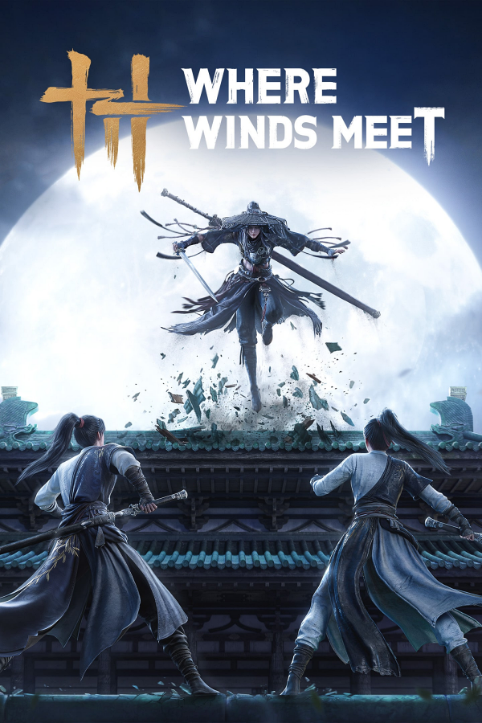

Game profile

Where Winds Meet
Every archived year-end list appearance, including placement and points earned.
About the Game
Where Winds Meet is an epic open-world action-adventure RPG rooted in the rich legacy of Wuxia. Set during the turbulent era of tenth-century China, you take on the role of a young sword master, uncovering forgotten truths and the mysteries of your own identity. As the wind stirs across mountains and rivers, so too will your legend rise.
| Released | 2025-11-14 |
|---|---|
| Developer | Everstone Games, Everstone Studio |
| Publisher | Netease |
| Genres | Action, Adventure, RPG |
| Platforms | PC, PlayStation 5 |
SingleplayerSteam AchievementsMultiplayerFull controller supportAtmosphericRPGCo-opStory RichOpen WorldOnline Co-OpExplorationFree to Play
Where to Buy
Game information provided by RAWG.
1List appearances
1Years represented
Points by Year
32025 points
List History
| Year | Source | List | Placement | Points |
|---|---|---|---|---|
| 2025 | Dexerto | The 20 best games of 2025 | 16 | 3 |